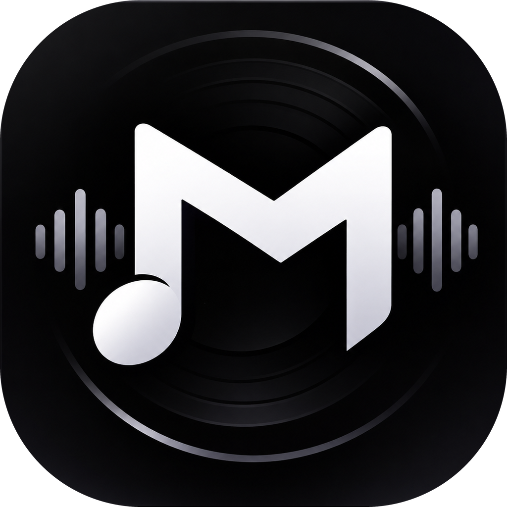

Musophone
Play. Listen. Enjoy.
An aesthetic YouTube Music client for Android.
Download APKFree and open source under GPLv3.
Playback
Search, browse and play anything on YouTube Music. Listen in Hi-Res lossless FLAC and ALAC from a module source, with YouTube Music as the fallback. Tracks run gapless with true crossfade, from 0 to 12 seconds, and Automix (beta) blends them like a DJ with beat-matching and tempo-stretching. Download offline with embedded metadata, bring in your local library, and keep playing in the background.
Look and feel
An animated album canvas on the now-playing screen. Colors come from the album art through a Material palette, and the bars are frosted glass built on Material 3. Lyrics highlight word by word with an Apple-style animation.
Lyrics from twelve sources
Your accounts
Sign in with Google for personalized content. Connect Spotify to play your playlists and Liked Songs. Show what you are playing with Discord Rich Presence, scrobble to Last.fm and ListenBrainz, and add, edit, test and health-check your own pluggable sources.
Controls
Set separate quality limits for Wi-Fi and mobile data. Change speed from 0.5× to 2×, skip silence, set a sleep timer or stop after the current track, and use the system equalizer. Bit-perfect USB output sends lossless tracks to your DAC unchanged, and stats for nerds show codec, bit depth and sample rate.
Get the APK.
Download the latest signed build and install it on your Android phone.
To install, allow "Install unknown apps" for the browser or file manager you downloaded it with.